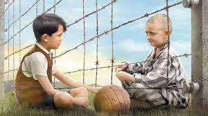
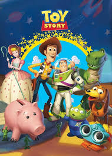
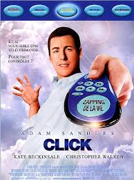
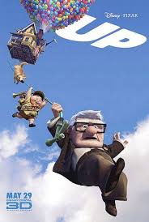

| Título do Filme |
Link |
Opinião |
Capa |
| O Menino do Pijama Listrado |
Assistir | ;
Filme retrata... ......... |
 |
| Toy story |
Assistir | ;
O aniversário do garoto Andy está chegando e seus brinquedos ficam nervosos, temendo que ele ganhe novos
brinquedos que possam substituí-los. Liderados pelo caubói Woody, o brinquedo predileto de Andy, eles
recebem Buzz Lightyear, o boneco de um patrulheiro espacial, que logo passa a receber mais atenção do
garoto. Com ciúmes, Woody tenta ensiná-lo uma lição, mas Buzz cai pela janela. É o início da aventura do
caubói, que precisa resgatar Buzz para limpar sua barra com os outros brinquedos. |
 |
| Click |
Assistir | ;
"Click" é um filme americano de 2006 dirigido por Frank Coraci, escrito por Steve Koren e Mark O'Keefe,
e produzido por Adam Sandler, que também interpreta Michael Newman, o personagem principal. O filme
explora drama, fantasia e ficção científica, focando na luta de Newman com a família e a vida. |
 |
| Up: Altas Aventuras |
Assistir | ;
Filme retrata... ......... |
 |